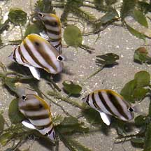
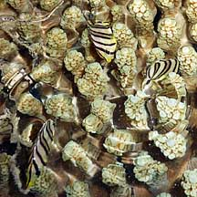
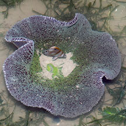
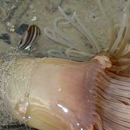

|
|
| fishes text index | photo index |
| Phylum Chordata > Subphylum Vertebrate > fishes |
| Butterflyfishes Family Chaetodontidae updated Sep 2020
Where seen? People are generally surprised to hear that colourful butterflyfishes are commonly seen on many of our shores. They usually hide among coral rubble and rocks, or among seagrasses. Fishes seen range from tiny ones less than 5cm to larger ones up to 20cm. Butterflyfishes are generally active during the day and hide in safe resting places at night. What are butterflyfishes? These fishes belong to Family Chaetodontidae. According to FishBase: the family has 10 genera and 114 species, most found in the Indo-Pacific oceans, generally near coral reefs. They are closely related to angelfishes (Family Pomacanthidae) which used to be included in the butterflyfish family. Features: Butterfly fish adults grow to about 20cm, but smaller juveniles (5-10cm) are more commonly seen during low tide. Body flat, disk-shaped so that it almost disappears when seen from above or head on. Being very flat, the butterflyfish can also slip into narrow cracks. Usually with colourful patterns; some have a large 'false eye' somewhere on the back of the body. When seen sideways, the large 'false eye' may fool predators into thinking that it is a big fish! Smaller predators may thus be discouraged. And if a predator does attack it, the butterflyfish unexpectedly swims 'backwards'. Its real eye is concealed by a colorful band. Their colours are usually brighter during the day, and duller at night. What do they eat? The butterflyfish and its relatives nibble on small creatures. They have a pointed snout and small mouth with brush-like teeth; 'Chaetodont' means 'bristle-tooth' in Greek. Some species have a long snout which can probe crevices and other hiding places and used like pincers or tweezers. Those with shorter snouts nip off soft food. Others may also eat sponges, fish eggs, plankton and small algae. Some feed on creatures found on the bottom such as worms. Some may nibble on coral polyps, using their pointed mouths. A few species may feed in midwater on zooplankton. Many eat a combination of coral polyps or tentacles, small animals, fish eggs, and seaweeds. An adult butterflyfish is usually restricted to a small territory and doesn't travel far from it. Their planktonic larval stage, however, is long and they may thus drift to settle far from their birthplace. |
 Sometimes many are seen together. Chek Jawa, Jul 05 |
 Pointed snout to nibble on small things. Sentosa, Oct 03 |
 Flattened sideways it's hard to spot from above or head on. Sentosa, Oct 03 |
| Butterflyfish Babies: The male and female of these fishes generally look similar. Many are found in monogamous mated pairs. In many species, the pairs are stable for at least three years and some may pair for life. A mating pair will rise to the water surface together, simultaneously releasing eggs and sperm. A unique feature of this family is a prolonged larval stage in which the free-swimming larvae may remain drifting with plankton for 2-3 months before changing into juvenile butterflyfishes. As a result, butterflyfishes are quite widely distributed. They are unique among fishes in that the larvae pass through a stage when a bony sheath encases the head. |
 Some are seen among living corals. Tanah Merah, Jun 10 |
 Sometimes seen near carpet anemones. Chek Jawa, Jul 05 |
 Seen near a cerianthid. Changi, Jun 02 |
| Human
uses: Butterflyfishes of various kinds are popular in the
live aquarium trade. The family is the third most frequently exported
and second highest in total value in the aquarium trade. However,
most species are difficult to maintain in captivity. Those that eat
only specialised prey are doomed to die of starvation in an aquarium. Harvesting of butterflyfishes and their relatives from the wild for the live aquarium trade may involve the use of cyanide or blasting, which damage the habitat and kill many other creatures. Like other fish and creatures harvested from the wild, most die before they can reach the retailers. Without professional care, most die soon after they are sold. Often of starvation as owners are unable to provide the small creatures and plants that these fishes need to survive. Those that do survive are unlikely to breed. |
| Some Butterflyfishes on Singapore shores |
| Long pointed snout. 4 bands - orange edged with black and white. Distinct white-ringed eye spot on dorsal fin. |
Short snout. 4 bands - yellow edged with brown. Smudged eye spot on dorsal fin. |
Longish snout. 8 bands - black. No eye spot on dorsal fin. |
| Family
Chaetodontidae recorded for Singapore from Wee Y.C. and Peter K. L. Ng. 1994. A First Look at Biodiversity in Singapore. +Other additions (Singapore Biodiversity Records, etc)
|
Links
References
|